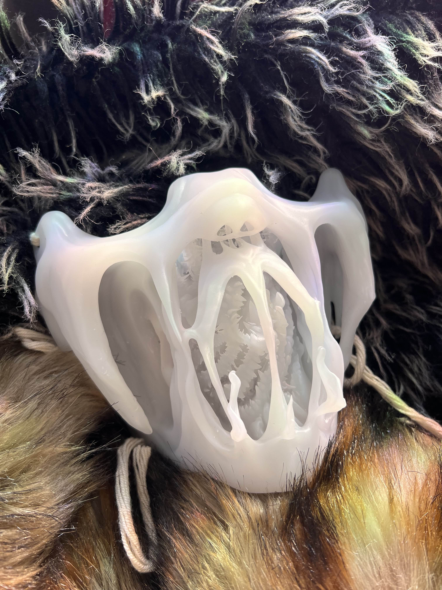
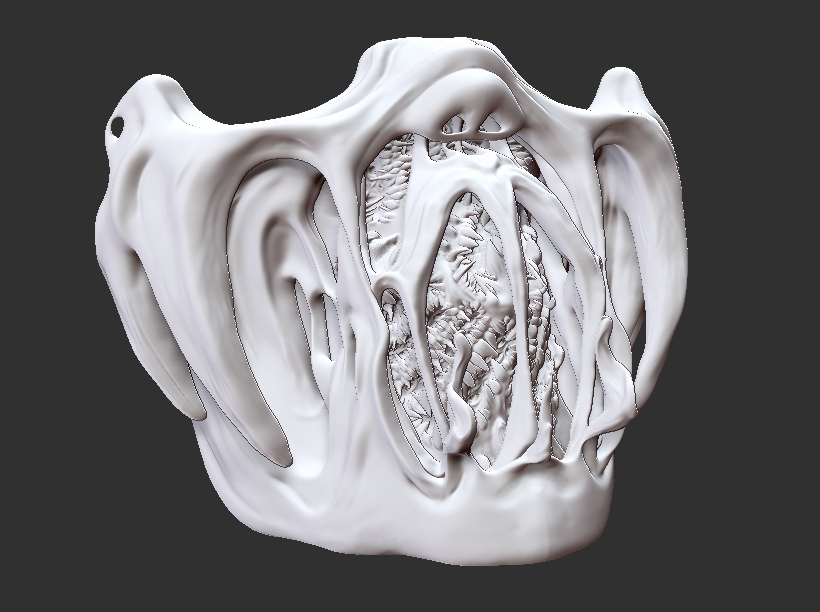

Lost Lost without a partner, I sought out to find new currents. Upon listening to the eternal rumble a whisper pours into my ears and presents itself like a beacon. Gracefully unfolding upon my inner eye were these blossoming seeds. Transcending. Unbecoming. Breaking. Controlling. Flowing.:
Intrigued by the whispers I began my journey.In the wake of searching for their meaning I stumbled upon Spirits and Ghosts of all kinds.Finding out, their powers are, against all believes not all of evil origin.I could see my own reflection in these entities. Yearning to utilize the true face. The abundant power. Yet. Scared. Were the whispers crawling from a depth not to be unveiled? What darkness awaits our fate? Are we in control of this cursed state?

Work 1 image 01 — placeholderInstead of running rampant and appropriating ancient history, I abandoned the cultural references to find deeper meaning in my artwork and forge a connection to something more intense. Instead of copying folklore, I created my own meaningful alliance with the entities surrounding me. Foraging a piece special to me, yet relatable to others.
A path opened. It was light. But just because it seemed that way does not mean it bears the fruit of serenity. The obvious is not always the obvious. We judge books by their cover. People by their mistakes. Everything by their looks. It's time we rethink our own position. Time to change perspective. There are more layers than just black and white. So this piece can also be viewed in more than one way. For once it forces you to shift perspective. Not judge the grotesque and read deeper than just first sight. Then it's about control. Crawling out of the cage you put yourself in. Realizing that control over yourself has always been in your hands. You change your perspective yourself. You claw through this hell yourself.

Work 1 image 02 — placeholderAnd so I build a chamber to escape. Trapping you. Controlling you. Just for you to be able to be free.